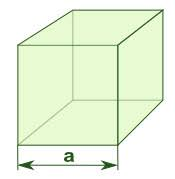

Objem krychle se počítá pomocí vzorce V=a^3 .
a - hrana krychle
Výpočet objemu krychle má mnoho praktických aplikací v různých odvětvích, zejména v oblastech jako jsou inženýrství a stavebnictví. Některými konkrétními uplatněními jsou:
1. Fyzika: Výpočty krychle jsou také důležité v oblasti fyziky, zejména v mechanice a termodynamice. Například při výpočtu hustoty látek se často používají krychlové jednotky.
2. Geometrie: Výpočet objemu krychle je základním prvkem v geometrii a má široké uplatnění v dalších oblastech matematiky, jako je například výpočet povrchu krychle, vzdáleností mezi body v krychli atd
3. Architektura a stavebnictví: Výpočet objemu krychle je důležitý pro plánování a návrh staveb a konstrukcí. Například objem krychlové nádrže se používá k určení množství vody, které lze v ní skladovat.
4. Informatika: Krychle jsou často používány v grafice a počítačové vizualizaci jako základní prvky pro tvorbu 3D modelů a herních prostředí.
5. Vzdělávání: Výpočet krychle je základním prvkem v učení geometrie a matematiky a používá se pro výuku v základních a středních školách.

Celkově lze tedy říci, že výpočet objemu krychle má mnoho praktických využití v různých situacích a je důležitým nástrojem pro plánování, návrh a výrobu.